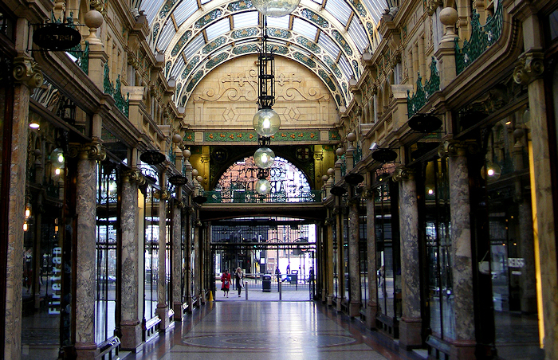
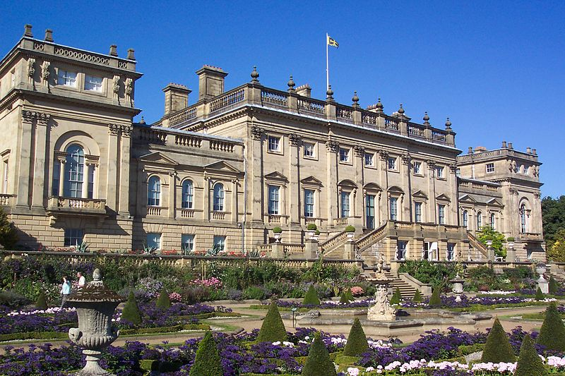
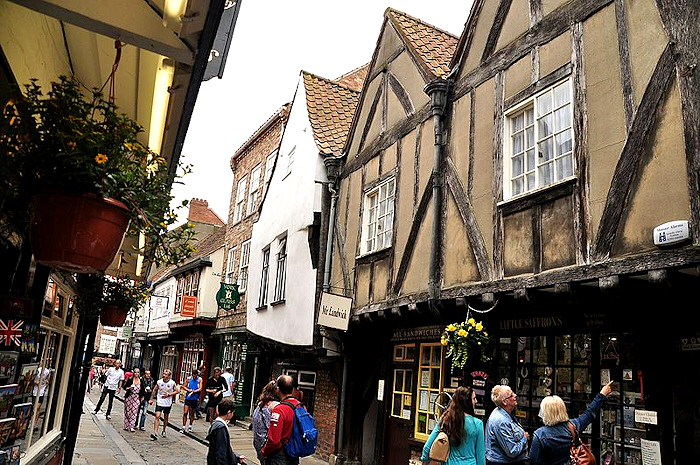
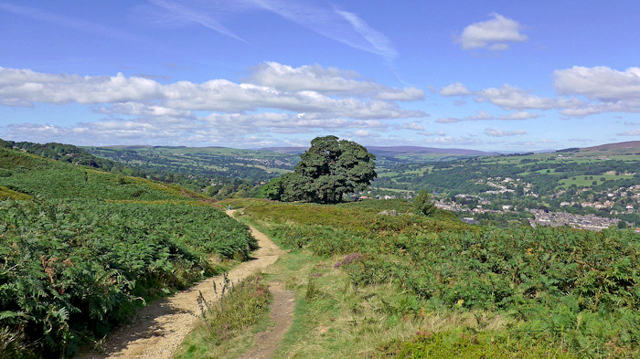
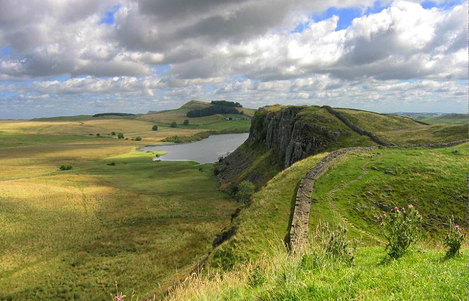
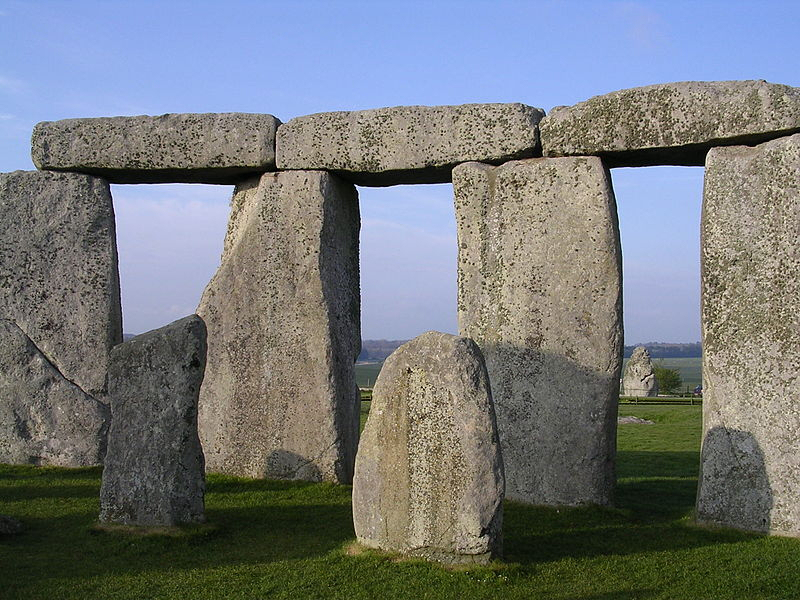
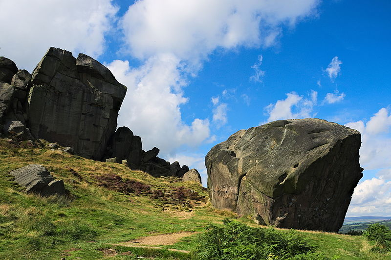

Leeds (map) has a wide variety of entertainments and sightseeing opportunities within the city, but is also central in the UK, with good connections to a wide range of day trips and areas for longer breaks, especially around the rest of Yorkshire, the county it sits within. This page gives some suggestions for things to do in Leeds, Yorkshire, and the UK, including some days out if you're bringing kids.
Leeds has some nice attractions worth seeing. If you're walking, then the City Museum and Art Gallery are pretty good for free provincial cultural institutions (the Henry Moore next door to the gallery specialises in scupture). Also good is the Royal Armouries and general Leeds shopping, the most interesting of the latter being in the various covered historical arcades. Worth an explore is the area around the Dark Arches (under the station) and Kirkgate Market. One of the nicest things about Leeds is that it wasn't extensively bombed during World War II, so it has some great architecture – as you're wandering around, keep looking up!
If you have transport, or can afford a taxi or a bit of a walk, the Thackray Medical Museum is great, and further out there's Harewood House and Temple Newsam. If you're after a night out, there are obviously lots of clubs, pubs and resturants, but there's also four theatres, two cinemas, and a host of other things going on; details on the Leeds List.
While Leeds is all about the dreams of Victorian Industrialists, York is all about the Medieval. It's about 20 mins on the train from Leeds, and a good day out. Worth a visit are the Yorkshire Museum and Minster. Also good fun is Jorvik Viking Centre. There's some nice shops in the Shambles, and train enthusiasts will love the National Railway Museum. The art gallery is good, but a particular highlight is the Centre of Ceramic Art.
Probably Leed's main rival in the North, Manchester is the city's brash, exciting, cousin. Well set up for entertainment, Manchester has plenty to see and do, and is only about 50 minutes on the train from Leeds. Great for a night out (and there are late night trains back), it is known for its LGBT centre Canal Street, along with the (sadly now demolished) Haçienda, which led the way in British music for 20 years. For programmers, it has has a special place as one of the centres of early computing and the home of Alan Turing after the war; if you want to see some of the early computing elements, sign up for the conference fieldtrip.
Famously home to the "Mersey Sound" in the 60s, and especially The Beatles, Liverpool also has a wider cultural and historical presence within the UK and is an easy day trip from Leeds by train. Of special note are the International Slavery Museum; the Maritime Museum, with its Titanic collection; the Tate Liverpool art gallery; and, of course the Cavern Club, but Liverpool has a wide variety of really excellent museums and galleries, along with a wide range of cultural and historical sites.
If you want to get out of town and into the Yorkshire Dales, you can get the train to Ilkley or Skipton. Ilkley is a small town in Wharfedale, from which you can walk up onto the famous (in Britain anyway!) Moor. There's some lovely walks, both short and long, many of which take in bronze age rock art and stone circles. Back in town, there are plenty of places to eat, though the most famous are Betty's and, for foodies, The Box Tree.
Skipton is a classic Dales market down in Airedale. Worth a visit is the well preserved Castle, but it's a nice town to just wander around. Skipton is the "Gateway to the Dales": from here you can get by car or bus (Dales Bus) to such delights as Malham Cove or Upper Wharfedale. Alternatively, a great way to see the Dales is to take the classic British railway journey from Settle to Carlise, which you can start from Leeds.
Alternatively, you could head by train to Hebden Bridge in Calderdale, which is a great community of thinkers and artists. Most notable for its shops and cafés, there's also an interesting the Alternative Technology Centre on the canal. While it's a fair walk to Dales-like countryside, there's nice walks to Heptonstall (where American poet Sylvia Plath is buried) and Hardcastle Crags.
Also in the area is Haworth, home of the Brontës, though it is a little hard to get to (watch the return buses on a Sunday) – if you're a fan of the Brontës, the village and Parsonage are definitely worth a visit, and there's plenty of interesting shops and places to eat there as well.
Leeds is within two hours train journey of London, though it's a stretch to fit anything in for a day-trip and you're better planning a longer break there if you'd like to see it. If you are heading that direction, then Bletchley Park is worth the detour, along with the associated National Museum of Computing (note opening days for the latter on the website): you can get there by train from London, or via Birmingham from Leeds. In London itself is the Science Museum, which includes a wide ranging collection around early computing, including a working implementation of Babbage's Difference Engine No. 2; but also good are the Natural History Museum; The British Museum; The National Gallery; and the The Tate Modern along with any number of quirkier places.
Edinburgh is a (beautiful) three hour train ride from Leeds, and makes a great starting point for visiting Scotland, as well as having a great deal to offer as a city itself. On the way up, there's also Hadrian's Wall, the final frontier of civilisation, as far as the Roman Empire was concerned. There's a variety of bus options from Newcastle and Carlisle along the wall.
Leeds is very convienient for visiting some of Britain's best national parks. As well as the Dales, there's also The Lake District; The Peak District/Derbyshire; and Northumberland
If you feel like going further afield, and are happy hiring a car, you could do a lot worse than head to Southern England, and a very nice few days can be spent exploring the little cluster of sites between the ancient cities of Bath; Salisbury; and Winchester; including Stonehenge and Glastonbury, Uffington and Cerne Abbas (we'll leave you to search that one!).
Finally, if you want to head to the continent for a break, there are good connections from Leeds to Europe, via London and the Eurotunnel. Paris is ~four hours train ride from London, and from there you can travel to anywhere from Norway to Turkey, and beyond. Airports nearby include Leeds/Bradford (linked by bus to Leeds) and Manchester (linked to Leeds by train).
Here's a short video introducing Yorkshire (I'm afraid the choir don't sing all the time you're here, but it is still fairly lovely even without them):
Train times and tickets are available from any station, but also online from TheTrainLine.com, though you may also want to
think about a Britain-wide pass.
Details of buses around Leeds and West Yorkshire can be found at WY Metro. For the Yorkshire Dales (which is North Yorkshire), see
Dales Bus.
To organise trains to Europe, see Eurotunnel. For tickets onwards around Europe, see
Rail Europe / SNCF, or for multi-city passes, Eurail.
A lot of sites in the UK are managed by either
English Heritage or
The National Trust: if you want the full Downton, these are good starting points.
For general UK tourism, including accomodation, see Visit Britain; for Yorkshire, see
Welcome to Yorkshire.
Here's some notable local attractions which are good for kids:
Leeds:
The Thackray Medical Museum: grizzly fun, including a stinking mock-up of Victorian England and a section on how the body works.
The City Museum: good provincial museum, with plenty for a couple of hours.
Royal Armouries: generally have knights in armour etc.
Close by:
Jorvik Viking Museum, York: travel back to a stinky viking village, and see how archaeology works.
National Railway Museum, York: the age of steam and more.
National Media Museum, Bradford: a short train ride from Leeds, with loads for kids, including a room of so-called (*cough*) "historical" video games and some
good displays on internet safety and computer crime.
Yorkshire Sculpture Park, South of Leeds: surprisingly fun walk in the countryside for kids, but hard to get to without a car.
Magna, Sheffield: engineering and science museum, with a water park for the nicer days; bit of a trek by public transport, but some spectacular bits.
Eureka, the National Children's Museum, Halifax: national science and engineering museum for kids 1-11.
Ilkley Moor: generally nice countryside, with some adventurous scambles around the Cow and Calf (kids will need watching around some of the higher cliffs, but there's plenty of low stuff) and a cute toy museum.
